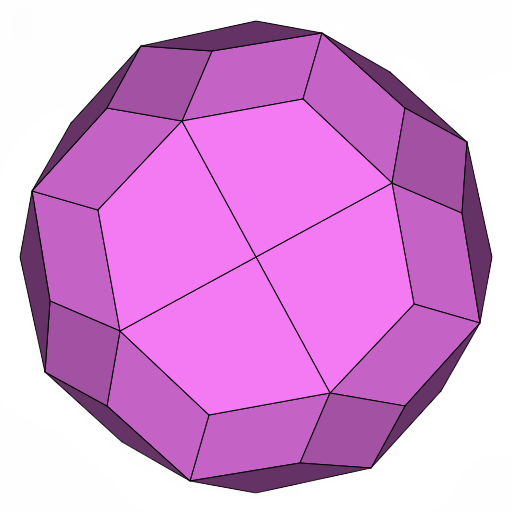
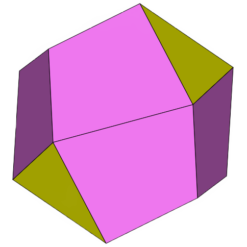
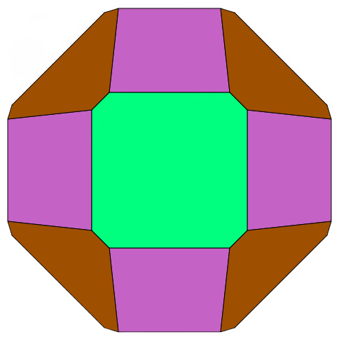
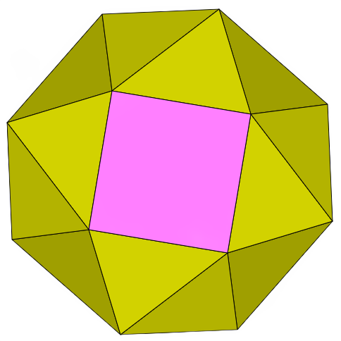
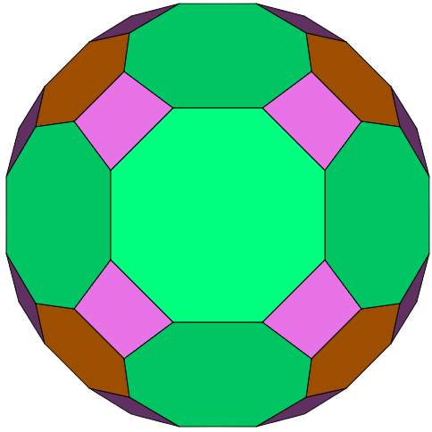
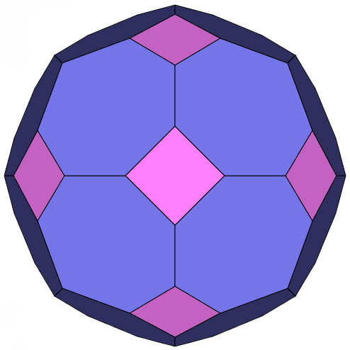

Others
-
Archimedean-Catalan Hulls
Each polyhedron on this page is the convex hull of an Archimedean solid compounded with its Catalan dual. This operation is equivalent to John Conway's "join" operation applied to either the Archimedean solid or the Catalan dual.
-
Propellor Solids
The solids appearing on this page were created by applying George Hart's propellor operation to the Platonic solids and some of the Archimedean and Catalan solids.
-
Biscribed Non-Chiral Solids
For these pages, a biscribed solid is defined to be any convex polyhedron that has concentric circumscribed and inscribed spheres, where the sphere center is also the centroid of the vertices and the centroid of the face tangency points. The five Platonic solids are biscribed solids, but none of the Archimedean or Catalan solids are. The convexity criterion rules out the rest of the uniform polyhedra.
-
Biscribed Chiral Solids
For these pages, a biscribed solid is defined to be any convex polyhedron that has concentric circumscribed and inscribed spheres, where the sphere center is also the centroid of the vertices and the centroid of the face tangency points. The five Platonic solids are biscribed solids, but none of the Archimedean or Catalan solids are. The convexity criterion rules out the rest of the uniform polyhedra.
-
Rectified Archimedean Solids
Each solid on this page was created by applying the rectify operation to one of the Archimedean solids. Rectification is a form of truncation where each vertex is truncated up to the midpoints of the edges meeting at that vertex. This operation is typically applied to one of the Platonic solids, but it can also be applied to a non-regular polyhedron as long as the midpoints of the edges meeting at each vertex are coplanar. If the non-regular polyhedron is convex, then the resulting polyhedron will not intersect itself.
-
Truncated Archimedean Solids
Each solid on this page was created by truncating one of the Archimedean solids, and then applying a canonicalization algorithm to the result.
-
Truncated Catalan Solids
Each solid on this page was created by starting with one of the Catalan solids and truncating some or all of its vertices.
-
Chamfered Solids
The "chamfer" operation is defined as a truncation along a polyhedron's edges.
-
Derived Solids
The "hexpropellor" operation is defined as a variant of George Hart's propellor operation, where hexagons rather than tetragons are inserted around the faces of the original polyhedron.
-
Greater Self-Dual Solids
Each self-dual polyhedron on this page has more than 16 faces and has full tetrahedral or chiral tetrahedral symmetry.
-
Other Solids
This page contains a variety of other interesting polyhedra.